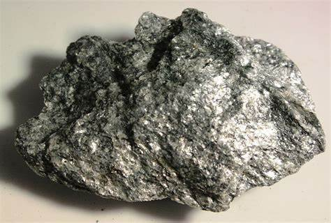
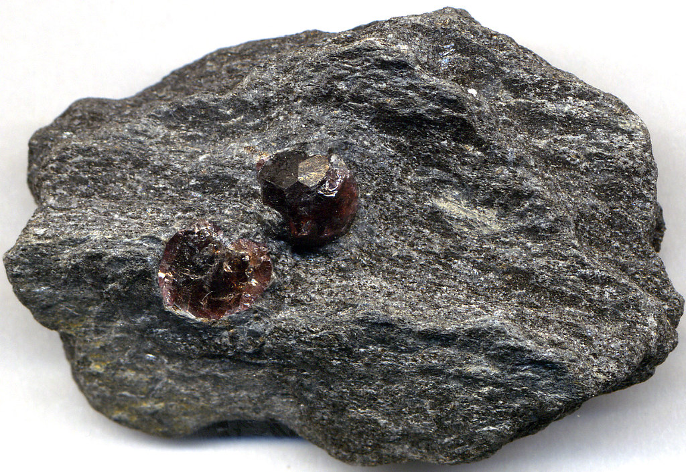
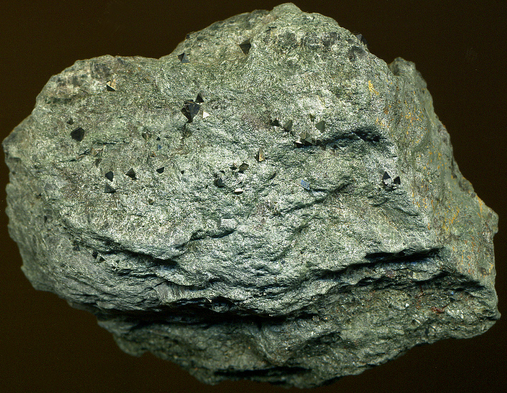
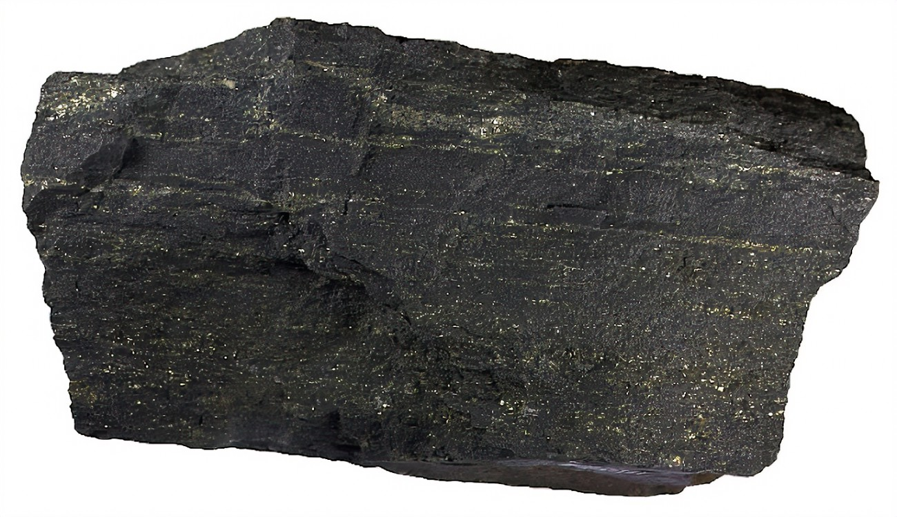
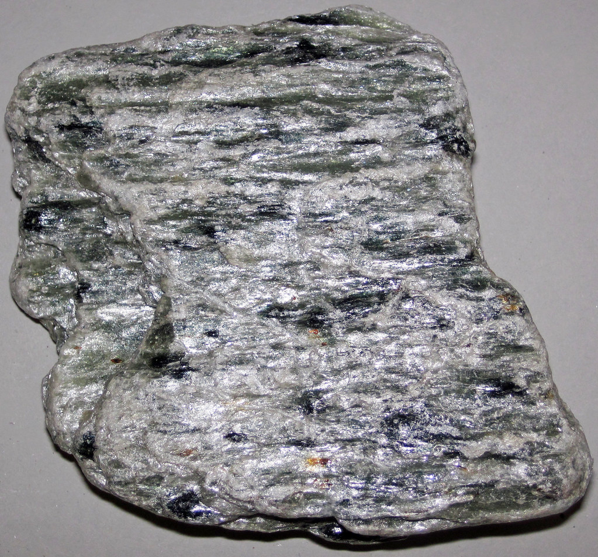
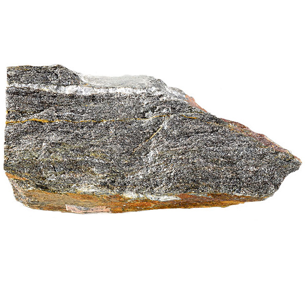
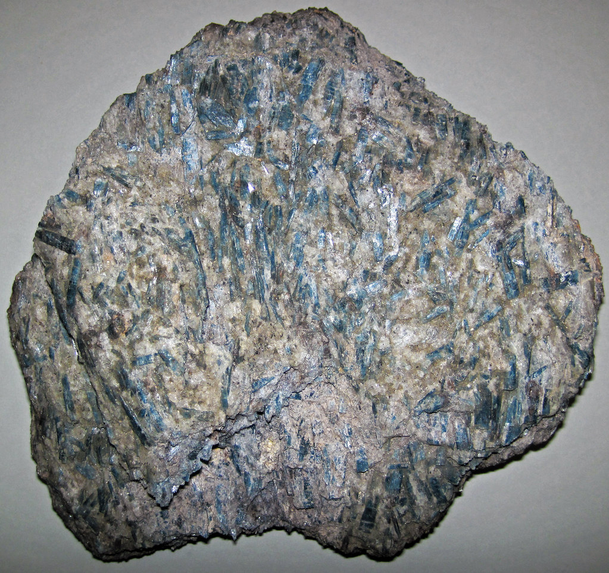
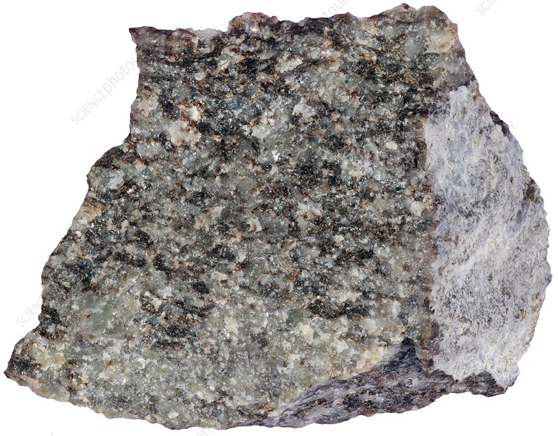

Schist: The Foliated Metamorphic Rock

Chemical Formula: Varies; primarily composed of minerals like mica, chlorite, quartz, and feldspar
Color: Various (Silver, Green, Grey, Brown, Black)
Hardness: 4-5 on the Mohs scale
Crystal System: Foliated metamorphic rock
Localities: United States, Brazil, Norway, India, and the Alps (Europe)
Common Uses: Building stone, decorative stone, construction aggregate, sculptures, and gemstones (garnet, kyanite)
Introduction to Schist
Schist is a medium-grade metamorphic rock characterized by its foliated structure, which means it has a layered appearance due to the alignment of platy minerals such as mica. The word "schist" is derived from the Greek word "schízein," meaning "to split," highlighting its tendency to split into thin flat sheets. This foliation occurs due to the intense heat and pressure that act on precursor rocks such as shale during regional metamorphism.
Schist has been widely used throughout history for construction, decorative purposes, and even gemstone production. Its unique texture, formed from a variety of minerals, makes it an attractive and versatile material for many industrial and artistic applications.
Formation and Types of Schist
Schist forms when pre-existing rocks such as shale or mudstone undergo regional metamorphism, a process involving extreme pressure and heat over long periods. This causes the minerals in the rock to recrystallize and align in parallel layers, creating the distinctive foliated texture. Schist often contains significant amounts of mica, which gives it a shiny, reflective surface.
Key Types of Schist:
1. Mica Schist
Rich in mica minerals, this is the most common variety of schist. It splits easily into thin layers and has a shiny appearance due to its high mica content.
2. Garnet Schist
Garnet schist contains visible garnet crystals, making it a sought-after rock for both decorative and gemstone uses. The garnet crystals are often embedded in a matrix of mica or quartz.
3. Chlorite Schist
Green in color due to the presence of chlorite minerals, this type of schist is less shiny than mica schist but is still used in construction and decorative applications.
4. Graphite Schist
Graphite schist contains significant amounts of graphite, giving it a dark color and greasy texture. It can be used industrially for the extraction of graphite.
5. Talc Schist (Soapstone)
A very soft variety of schist, talc schist contains large amounts of talc and is commonly used in sculptures and as a carving stone.
Structure and Properties of Schist
Schist is known for its foliated structure, which is created by the alignment of flat, platy minerals such as mica. The rock often displays a shiny or metallic sheen due to the presence of these reflective minerals.
- Foliation: Schist’s foliated structure is created by the alignment of flat platy minerals such as mica. The rock often displays a shiny or metallic sheen due to the presence of these reflective minerals.
- Hardness: Schist has a hardness of 4-5 on the Mohs scale, making it softer than many other metamorphic rocks but still durable enough for use in construction and decoration.
- Color: Schist can vary in color depending on its mineral composition, with common colors including silver, green, brown, and black. Garnet schist often has red or pink garnet crystals.
- Mineral Content: Schist often contains high concentrations of mica, quartz, and feldspar, along with accessory minerals like garnet, staurolite, and kyanite.
Uses of Schist
Schist’s versatility and unique appearance have made it a popular material for both industrial and decorative uses. Its natural foliation makes it easy to work with, and its mineral inclusions, such as garnet and kyanite, add value in gemstone applications.
1. Construction Material
Schist has been used as a building material for centuries, especially in areas where it is locally abundant. Its ability to split into thin, flat sheets makes it useful for wall cladding, paving, and even roofing in certain regions.
Historical Uses:
- Schist-built houses in regions like Vermont (USA) and parts of Europe showcase its durability and rustic aesthetic.
- Dry-stone walls and terraces made from schist are common in mountainous regions where the rock is readily available.
2. Decorative Stone and Sculptures
Schist's attractive appearance and ability to take on a polished finish make it a popular choice for decorative stonework, including sculptures, tiles, and garden features.
Sculpture Use:
Artists often use softer varieties of schist, such as talc schist (soapstone), for carving intricate designs due to its softness and workability.
3. Gemstone Production
Some types of schist contain valuable gemstone-quality minerals like garnet, kyanite, and staurolite. These gemstones are often extracted from schist matrixes and used in jewelry.
Garnet Schist:
Garnet crystals from schist are prized for their size and quality, making them a popular choice for gemstone enthusiasts and jewelers.
Unusual Varieties of Schist
Certain rare varieties of schist stand out due to their unique mineral compositions and appearance.
1. Staurolite Schist
This variety contains staurolite crystals, which often form distinctive cross-shaped patterns, making it highly collectible for its aesthetic and metaphysical properties.
2. Kyanite Schist
Kyanite, a blue silicate mineral, gives this type of schist a striking appearance. Kyanite schist is often used decoratively and for gemstone extraction.
3. Sericite Schist
Rich in sericite, a fine-grained mica, this schist has a silky sheen and is often used in decorative applications.
Sourcing Locations of Schist
Schist is found in many regions around the world, particularly in areas with a history of significant geological activity and mountain-building processes.
- United States: Vermont and New York are key locations for schist mining, particularly for mica schist, which is used in construction and decoration.
- Brazil: Brazil is a major source of kyanite and garnet schist, which are mined for both industrial and gemstone use.
- Norway: Norway is known for its high-quality schist used in construction and as a decorative stone.
- India: Indian schist is often used for flooring, wall cladding, and decorative purposes, particularly the rich green and brown varieties.
- The Alps (Europe): Schist is abundant in the European Alps, where it has been used for centuries in building mountain homes and terraces.
Exploration and Mining of Schist
Schist mining involves identifying high-quality deposits through geological surveys and extracting the rock in a way that preserves its layered structure. Schist quarries are often located in mountainous regions where tectonic activity has created large deposits.
Exploration
Geologists look for regions with a history of regional metamorphism, as these areas are most likely to contain schist. Core drilling and ground surveys help determine the extent and quality of schist deposits.
Mining Methods
Schist is typically mined using open-pit methods. Large blocks of schist are extracted, often using controlled blasting or cutting, and then split along the natural foliation lines.
- Splitting and Processing: After extraction, schist is split into thin slabs for use as roofing, flooring, or wall cladding. The slabs are further processed by cutting and polishing, depending on their intended use.
Metaphysical Properties of Schist
In addition to its practical uses, schist is valued in metaphysical circles for its symbolic and healing properties, particularly when it contains minerals like garnet or staurolite.
- Transformation and Growth: Schist is often associated with personal transformation and growth, reflecting its own metamorphic origins.
- Clarity and Focus: Mica schist, in particular, is believed to aid in mental clarity and focus, helping individuals remain organized and grounded.
- Protection and Strength: Garnet schist is thought to provide protection and strength, especially in overcoming challenges or difficult transitions.
Famous Finds and Schist
Schist has been used in many iconic structures and locations around the world, showcasing its historical and architectural significance.
- The Manhattan Schist (New York, USA): The bedrock of Manhattan is composed primarily of schist, and it is this strong foundation that has allowed the construction of some of the world’s tallest skyscrapers, including the Empire State Building.
- Scottish Highlands (United Kingdom): The rugged hills and mountains of Scotland are rich in schist, which has been used for centuries in the construction of dry-stone walls, homes, and farm structures.
- Mont Blanc (The Alps): The Mont Blanc massif in the Alps is composed largely of schist, and the rock plays a key role in the geological stability of the region.
Caring for Schist
Schist, while durable, requires some care to maintain its appearance and prevent damage, particularly when used in decorative or structural applications.
- Cleaning: Schist surfaces should be cleaned with mild soap and water. Avoid using acidic cleaners, which can damage the stone’s surface and minerals.
- Sealing: Schist used in outdoor or high-moisture environments should be sealed to protect it from water damage, particularly in colder climates where freeze-thaw cycles can cause cracks.
- Repair: Over time, schist roofing or flooring may require repairs if individual tiles or slabs become loose or damaged. Regular inspections and prompt repairs can extend the life of schist installations.
Conclusion
Schist is a fascinating and versatile metamorphic rock with a wide range of applications, from construction and decorative stonework to gemstone production. Its foliated structure, rich mineral content, and aesthetic appeal make it a valuable material in various industries. Whether used in historical architecture, modern design, or spiritual practices, schist continues to be highly valued for its beauty, durability, and symbolic significance.
See Also
- Related Rocks: Gneiss, Slate, Phyllite
- Relevant Topics: Schist Mining, Metamorphic Rock Formation, Historical Uses of Schist